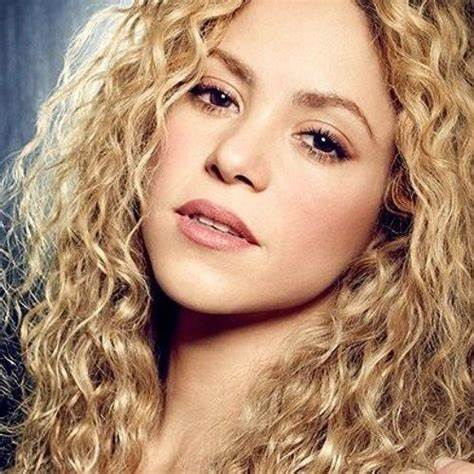

Shakira Mebarak
02 de febrero de 1977
Artista
Shakira es una artista pop colombiana de gran éxito, mejor conocida por sus brillantes movimientos de danza del vientre en el video de la canción 'Hips Don't Lie'. Ha vendido más de 70 millones de álbumes en todo el mundo. Teniendo un gran interés en la música desde la infancia, Shakira escribió su primer poema cuando tenía solo cuatro años. A una edad temprana, también bailaba improvisadamente en restaurantes tocando música genial. A menudo solía cantar y bailar para sus compañeros de clase y maestros en la escuela, y se ganó el apodo de "la bailarina del vientre". Cuando era adolescente, comenzó a actuar en su ciudad y llamó la atención de la productora de teatro local Mónica Ariza, quien le presentó al ejecutivo de 'Sony Colombia' Ciro Vargas. Lanzó su primer álbum 'Magia' cuando tenía solo 14 años. Aunque al álbum no le fue bien comercialmente, le dio la exposición que tanto necesitaba. Su gran avance llegó en la forma de su tercer álbum 'Pies Descalzos', que alcanzó el número uno en ocho países diferentes. También ganó varios premios y nominaciones por el álbum, y se hizo popular de la noche a la mañana. Su éxito en la música latina la animó a probar suerte en álbumes en inglés. Su primer intento en el álbum en inglés 'Laundry Service' fue multi-platino, y es considerado el álbum más exitoso de su carrera.

Retrato de Shakira
Linea de tiempo
- Ganadora de 15 premios Grammy.
- 40 Billboard Music Awards.
- Más de 400 premios ganados en toda su carrera.
- Alcanzó la fama internacional con solo 18 años.
- +120 millones de Álbumes vendidos.
- 180 millones de sencillos vendidos.
- La artista latina con más ventas y streams de toda la historia.
- Toca más de 5 instrumentos.
- Coeficiente intelectual de 140, cercano al de Albert Einstein.
- Produce, escribe sus propias canciones y es directora de la gran mayoría de sus proyectos.
- Ha estado en los eventos deportivos más importantes del mundo interpretando sus más grandes éxitos.
- Habla español, inglés, catalán, portugués, francés, italiano y árabe a la perfección
- Ha estado tres veces tanto en inauguraciones como clausuras de la copa mundial de la FIFA con canciones oficiales de la misma (2006, 2010 y 2014) y que a su vez son las más vendidas de la historia.
- La artista latina más grande de toda la historia
- Consolidada como una de las más grandes artistas en general de toda la historia de la industria musical, influenciando y abriendo puerta a otras estrellas actuales de la escena.
- Poseedora de la canción más exitosa de la década de los 2000 y una de las más vendidas de la historia.
- Única artista femenina en visitar 56 países en giras mundiales con récords de sold out y nuevas fechas agregadas por demanda.
- Poseedora del crossover más exitoso de todos los tiempos.
- La primera artista solista en tener un MTV Unplugged y a su vez el más vendido por una artista femenina.
- Embajadora de buena voluntad de la Unicef.
- La primera persona en cantar en español en los premios MTV VMAS.
- Fundadora de Pies Descalzos, fundación que ha construido múltiples escuelas que brinda educación, salud y alimentos a millones de niños en estado de vulnerabilidad en apoyo de las alianzas de las instituciones y embajadores más importantes del mundo.
- Un patrimonio de más de 400 millones de dólares.
Alumna Gloidy Mendez Dinarte - 2023 © Todos los derechos reservados